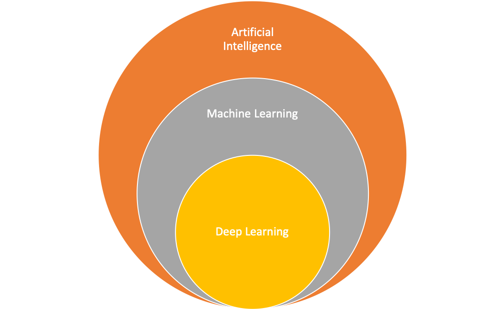
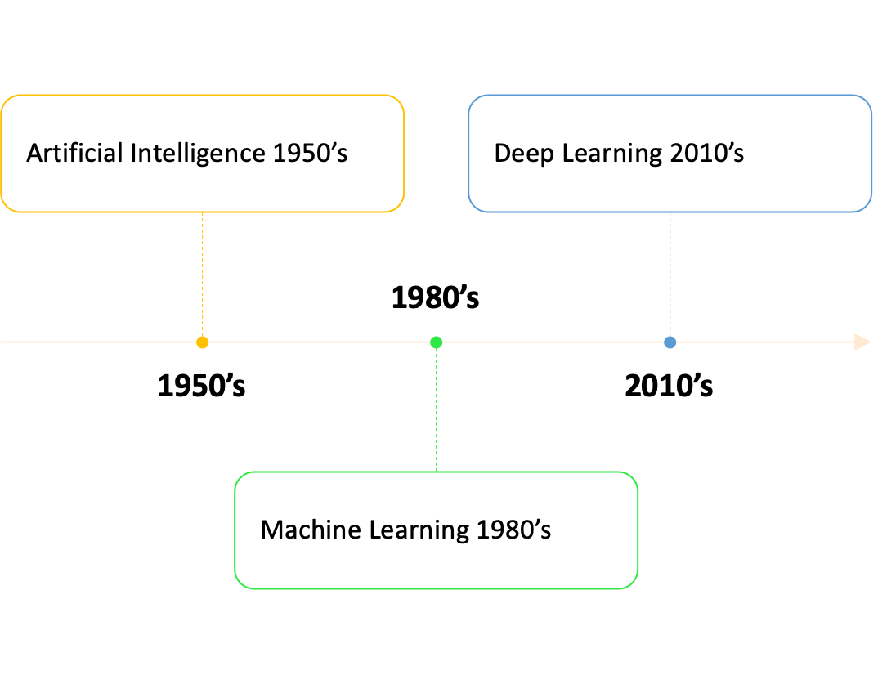
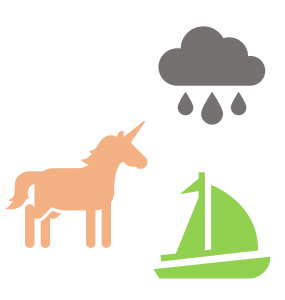
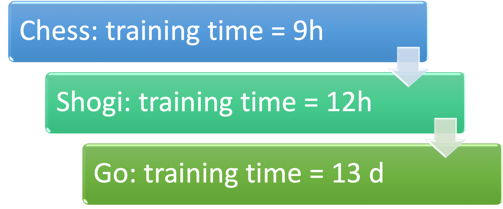
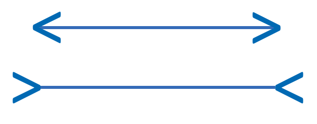
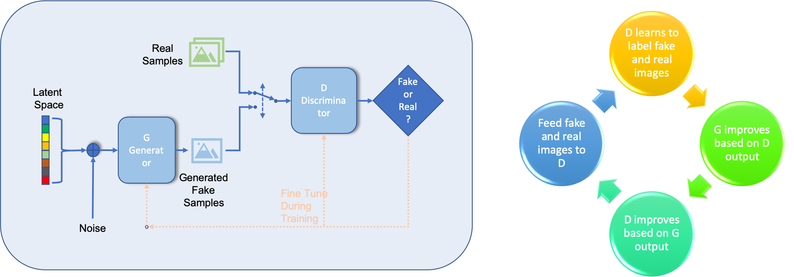
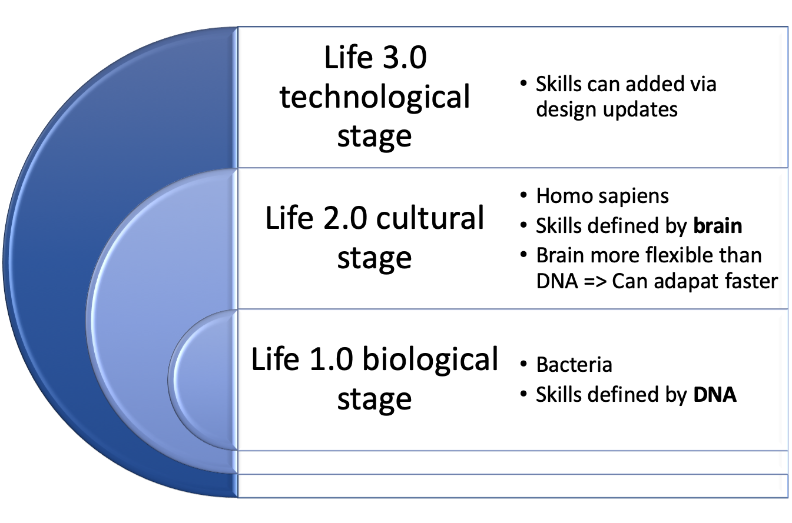
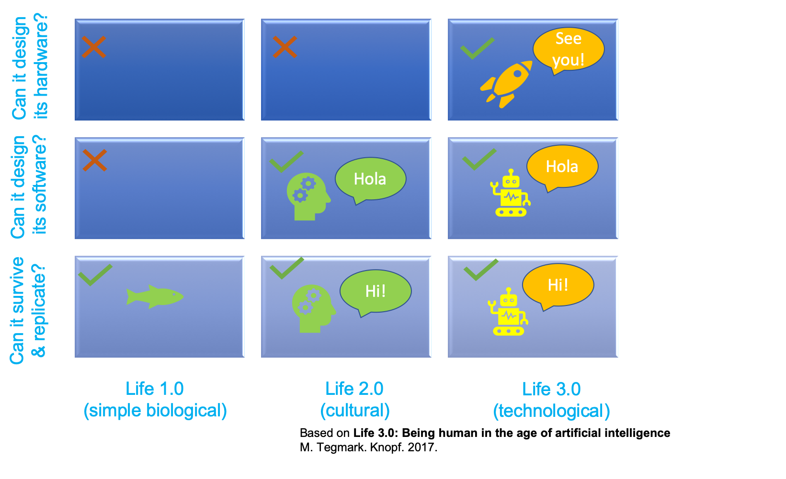
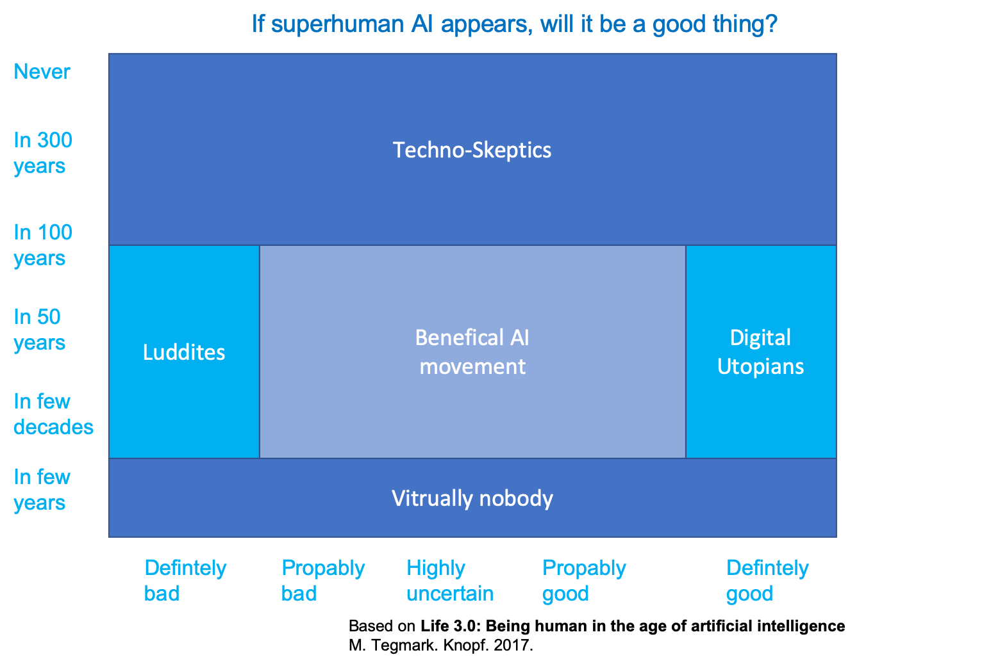
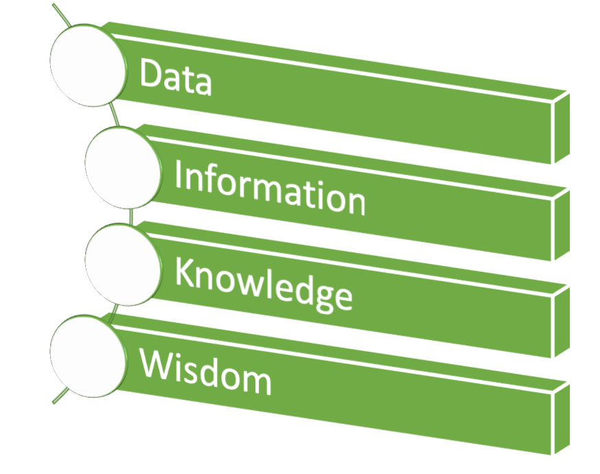

Table of Contents
Before we answer the question Machine learning, shall we? lets look into what machine learning is
What is machine learning?
Machine learning is a sub domain of artificial intelligence and is defined:
- Arthur Samuel:1 “Field of study that gives computers the ability to learn without being explicitly programmed”
- Tom Mitchell2 learn from experience E with respect to some task T and some performance measure P, if its performance on T, as measured by P, improves with experience E
What is intelligence?
To discuss the question of what is artificial intelligence, the first step is to define what intelligence is.
A group of 52 psychology researchers published in (Gottfredson 1997) the following definition:
A very general mental capability that, among other things, involves the ability to reason, plan, solve problems, think abstractly, comprehend complex ideas, learn quickly and learn from experience. It is not merely book learning, a narrow academic skill, or test-taking smarts. Rather, it reflects a broader and deeper capability for comprehending our surroundings—“catching on,” “making sense” of things, or “figuring out” what to do.
Alfred Binet, a french psychologist who invented first practical IQ test defined in 1905 (Binet and Simon 1916):
Judgment, otherwise called “good sense”, “practical sense”, “initiative”, the faculty of adapting one’s self to circumstances
And Albert Einstein said
The measure of intelligence is the ability to change.
Tegmark’s summarizes the situation in (Tegmark 2017)
There’s no agreement on what intelligence is even among intelligent intelligence researchers! So there’s clearly no undisputed “correct” definition of intelligence.
Definition of artificial intelligence sub domains
Even though there is no undisputed definition of intelligence there is a undisputed definition of how machine learning is related to artificial intelligence
Agreement: Machine learning is a sub domain of artificial intelligence (AI)

The history of those fields goes back to the 1950’s

Is AI smarter than humans?
Which of the following questions can a computer answer better?
- 17*353
- Wie viele Tiere von jeder Art nahm Moses mit auf die Arche?4
- Wie heißen die drei letzten Bundespräsidenten?5

Thinking, fast and slow (Kahneman 2011)
In Daniel Kahneman’s Thinking, fast and slow (Kahneman 2011) there are plenty of surprising social psychology experiments, on page 166 the following question is posed:
A cab was involved in a hit-and-run accident at night. Two cab companies, the Green and the Blue, operate in the city. You are given the following data:
- 85% of the cabs in the city are Green and 15% are Blue.
- A witness identified the cab as Blue. The court tested the reliability of the witness under the circumstances that existed on the night of the accident and concluded that the witness correctly identified each one of the two colors 80% of the time and failed 20% of the time.What is the probability that the cab involved in the accident was Blue rather than Green?6

Please cast your vote at https://pingo.coactum.de/1576787 or access Pingo webpage scanning QR code below:

Comparisons between AI and humans
Breast cancer detection
In a Google Health project8 the following results were achieved:
- Absolute reduction of 5.7% and 1.2% (USA and UK) in false positives
- Absolute reduction 9.4% and 2.7% (USA and UK)in false negatives.
In an independent study of six radiologists, the AI system outperformed all of the human readers. More on the study at https://www.nature.com/articles/s41586-019-1799-6
Working together: Lung cancer detection
With an estimated 160,000 deaths in 2018, lung cancer is the most common cause of cancer death in the United States
A study published in Nature medicine9 a team of members of Google AI and several hospitals reported
When prior computed tomography imaging was not available
- Model outperformed all six radiologists
- Absolute reductions of 11% in false positives
- Absolute reductions 5% in false negatives
ImageNet Large Scale Visual Recognition Challenge (ILSVRC)
The ImageNet Large Scale Visual Recognition Challenge10 (ILSVRC) (Russakovsky et al. 2015) evaluates algorithms for object recognition and image classification on a large scale.
Facts of ImageNet:11
- 14 million images
- 20,000 image categories
- 1000 image categories used for ILSVRC
The development of the results is shown in the graph below. The number of layers is a indication of model complexity
In 2017 the problem set to status “solved”
- 29 of 38 competing teams had an accuracy of more than 95%
- ImageNet stopped competition
AlphaGo Zero
Go is a strategy game invented 2500 years ago and has an estimated number of possible board configuration of 10¹⁷⁴ compared to chess which has is 10¹²º. A detailed description is given by DeepMind’s blog post “AlphaGo Zero: Starting from scratch”12
AlphaGo Zero is a version of DeepMind’s13 Go software AlphaGo
No human intervention
- No usage of historical data
- After 3 days of training as good as AlphaGo which beat world champion in 4 out of 5
- After 40 days of training becomes best Go player in the world
AlphaZero learned three games,

The capability progress of Alpha Zero during training is shown below

NOTE: EACH TRAINING STEP REPRESENTS 4,096 BOARD POSITIONS.
At the end of the training Alpha Zero achieved the following performance:

Implications are wider than just playing a game, as Garry Kasparov, a former world chess champion puts it:
The implications go far beyond my beloved chessboard… Not only do these self-taught expert machines perform incredibly well, but we can actually learn from the new knowledge they produce."
Bias
Models might end up biased, why is that?
Framing the problem
- Goal is business reason, not fairness or avoidance of discrimination
- Goal might lead to unwanted side effects https://openai.com/blog/faulty-reward-functions/
Collecting data
- Unrepresentative of reality
- Collecting images of zebras only when sun shines => model might look for shadow for classifying a zebra
- Reflects existing prejudices
- Historical data might lead recruiting tools to dismiss female candidates
- Unrepresentative of reality
Preparing the data
- Selecting attributes to be considered might lead to bias
- Attribute gender might lead to bias
- Selecting attributes to be considered might lead to bias
How to avoid bias
Avoiding bias is harder than you might think
Unknown unknowns
- Gender might be deducted by recruiting tool from use of language
- Imperfect processes
- Test data has same bias as training data
- Bias not easy to discover
Human bias
Machine learning model can be biased for several reasons as shown above, how about humans?
Study in Germany
- Judges read description of shoplifter
- Rolled a pair of loaded dice
- Dice = 3 => Average 5 months prison
- Dice = 9 => Average 8 months prison
Attacks
Especially image classification models have shown to be susceptible to attacks which leads to wrong classifications. This could lead to
- Traffic sign misclassification
- Avoiding face detection
How a attack can be performed is described by Goodfellow et al. in (Goodfellow, Shlens, and Szegedy 2014)
- Adding noise to image leads to misclassification
But what about attacks on human perception?
Which statement is correct?
Top line longer
- Bottom line longer
- Both are same length
Is this a picture of a real person?
Look at the picture below, is it a real person or an animation?
{kind=link}
The image is create using a generative adversarial network (GAN), see below for the principle, for detailed description see https://medium.com/ai-society/gans-from-scratch-1-a-deep-introduction-with-code-in-pytorch-and-tensorflow-cb03cdcdba0f

Outlook
What will the future bring for society?
The saddest aspect of life right now is that science gathers knowledge faster than society gathers wisdom.
Isaac Asimov
Development of life
Tegmark in “Life 3.0: Being human in the age of artificial intelligence” (Tegmark 2017) p. 23. classifies life into three stages and shows the two existing stages of life and the third stage which might be ahead.

The three stages of life have overlapping skills, but only life 3.0 has all skills and is able to design its hardware and therefore might be able to have unlimited skills

When will superhuman AI come, and will it be good?
Several opinions about when and if superhuman AI will appear and if it will be a good thing or not exists. Those opinions can be grouped as shown in the following graph.

Luddite => A person opposed to new technology or ways of working
Please cast your vote at https://pingo.coactum.de/15767814
AI aftermath scenario
To be prepared we might want to ask yourselves:
- Do you want there to be superintelligence?
- Do you want humans to still exist, be replaced, cyborgized and/or uploaded/simulated?
- Do you want humans or machines in control?
- Do you want AIs to be conscious or not?
- Do you want to maximize positive experiences, minimize suffering or leave this to sort itself out?
- Do you want life spreading into the cosmos?
- Do you want a civilization striving toward a greater purpose that you sympathize with, or are you OK with future life forms that appear content?
Depending on your answers this might lead to one of the following scenario
A verbal description of the scenarios is given below, type the name of the scenario into the left field, if you want more scenarios to be shown increase the “Show entries” entry
Data religion: Dataism
A data based religion called Dataism is a concept described by Harari in Homo Deus: A brief history of tomorrow (Harari 2016) and says:
- Universe consists of data flow
- Value of entity determined by contribution to data processing
- Collapses barrier between animals and machines15
- electronic algorithms eventually outperform biochemical algorithms
In data we trust
Humans supposed to distill 
- data => information
- information => knowledge
- knowledge => wisdom
- Dataists
- believe humans can not cope with immense flow of data
- put there trust in Big Data and computer algorithms
Dataism: only wild fantasy?
Dataism entrenched in
- computer science
- biology
- giraffes, tomatoes and human beings are just different methods for processing data
- that is current scientific dogma
Economists interpret economy as data processing system
- Gathering data about desires and abilities
- Turning data into decisions
- Capitalism => distributed processing
- Communism => centralized processing
- Capitalists against high taxes
- capital accumulates at state
- more decisions by single processor, namely government
Career: Oxford seeks AI ethics professor
- Associate Professorship or Professorship in Philosophy
- Apply for University of Oxford - Faculty of Philosophy (Ethics in AI)
Binet, Alfred, and Th Simon. 1916. “New Methods for the Diagnosis of the Intellectual Level of Subnormals.(L’Année Psych., 1905, Pp. 191-244).” Williams & Wilkins Co.
Goodfellow, Ian J, Jonathon Shlens, and Christian Szegedy. 2014. “Explaining and Harnessing Adversarial Examples.” arXiv Preprint arXiv:1412.6572.
Gottfredson, Linda S. 1997. “Mainstream Science on Intelligence: An Editorial with 52 Signatories, History, and Bibliography.” Citeseer.
Harari, Yuval Noah. 2016. Homo Deus: A Brief History of Tomorrow. Random House.
Kahneman, Daniel. 2011. Thinking, Fast and Slow. Macmillan.
Russakovsky, Olga, Jia Deng, Hao Su, Jonathan Krause, Sanjeev Satheesh, Sean Ma, Zhiheng Huang, et al. 2015. “ImageNet Large Scale Visual Recognition Challenge.” International Journal of Computer Vision (IJCV) 115 (3): 211–52. https://doi.org/10.1007/s11263-015-0816-y.
Tegmark, Max. 2017. Life 3.0: Being Human in the Age of Artificial Intelligence. Knopf.
American pioneer in the field of computer gaming and artificial intelligence https://en.wikipedia.org/wiki/Arthur_Samuel↩
professor of Computer Science and Machine Learning at Carnegie Mellon http://www.cs.cmu.edu/~tom/↩
17*35=595↩
Knowledge neglect https://en.wikipedia.org/wiki/Knowledge_neglect↩
Die drei letzten Bundespräsidenten: Steinmeier, Gauck, Wulf↩
Pingo question: What is the probability that the cab involved in the accident was Blue rather than Green? https://pingo.coactum.de/questions↩
Screening mammography aims to identify breast cancer at earlier stages of the disease, when treatment can be more successful. Despite the existence of screening programmes worldwide, the interpretation of mammograms is affected by high rates of false positives and false negatives. Here we present an artificial intelligence (AI) system that is capable of surpassing human experts in breast cancer prediction. To assess its performance in the clinical setting, we curated a large representative dataset from the UK and a large enriched dataset from the USA. We show an absolute reduction of 5.7% and 1.2% (USA and UK) in false positives and 9.4% and 2.7% in false negatives. We provide evidence of the ability of the system to generalize from the UK to the USA. In an independent study of six radiologists, the AI system outperformed all of the human readers: the area under the receiver operating characteristic curve (AUC-ROC) for the AI system was greater than the AUC-ROC for the average radiologist by an absolute margin of 11.5%. We ran a simulation in which the AI system participated in the double-reading process that is used in the UK, and found that the AI system maintained non-inferior performance and reduced the workload of the second reader by 88%. This robust assessment of the AI system paves the way for clinical trials to improve the accuracy and efficiency of breast cancer screening. https://www.nature.com/articles/s41586-019-1799-6↩
Abstract With an estimated 160,000 deaths in 2018, lung cancer is the most common cause of cancer death in the United States1. Lung cancer screening using low-dose computed tomography has been shown to reduce mortality by 20–43% and is now included in US screening guidelines. Existing challenges include inter-grader variability and high false-positive and false-negative rates. We propose a deep learning algorithm that uses a patient’s current and prior computed tomography volumes to predict the risk of lung cancer. Our model achieves a state-of-the-art performance (94.4% area under the curve) on 6,716 National Lung Cancer Screening Trial cases, and performs similarly on an independent clinical validation set of 1,139 cases. We conducted two reader studies. When prior computed tomography imaging was not available, our model outperformed all six radiologists with absolute reductions of 11% in false positives and 5% in false negatives. Where prior computed tomography imaging was available, the model performance was on-par with the same radiologists. This creates an opportunity to optimize the screening process via computer assistance and automation. While the vast majority of patients remain unscreened, we show the potential for deep learning models to increase the accuracy, consistency and adoption of lung cancer screening worldwide. Website: https://www.nature.com/articles/s41591-019-0447-x ↩
Homepage of ILSVRC http://www.image-net.org/challenges/LSVRC/↩
Homepage of ImageNet http://www.image-net.org↩
https://deepmind.com/blog/article/alphago-zero-starting-scratch↩
Homepage of DeepMind https://deepmind.com↩
Pingo question: Ihre Position zur AGI? https://pingo.coactum.de/questions↩
“Dataism was born from the explosive confluence of two scientific tidal waves. In the 150 years since Charles Darwin published On the Origin of Species, the life sciences have come to see organisms as biochemical algorithms. Simultaneously, in the eight decades since Alan Turing formulated the idea of a Turing Machine, computer scientists have learned to engineer increasingly sophisticated electronic algorithms. Dataism puts the two together, pointing out that exactly the same mathematical laws apply to both biochemical and electronic algorithms. Dataism thereby collapses the barrier between animals and machines, and expects electronic algorithms to eventually decipher and outperform biochemical algorithms.” Harari, Yuval Noah. Homo Deus: A Brief History of Tomorrow . HarperCollins. Kindle Edition. ↩